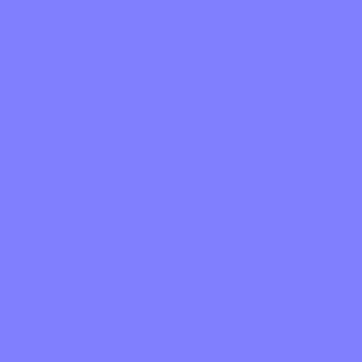
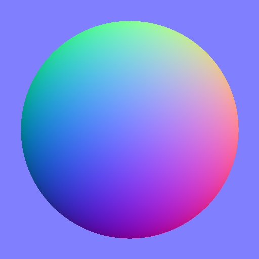
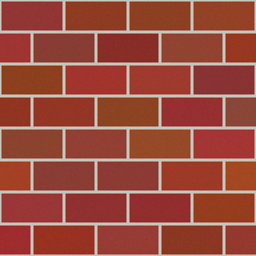
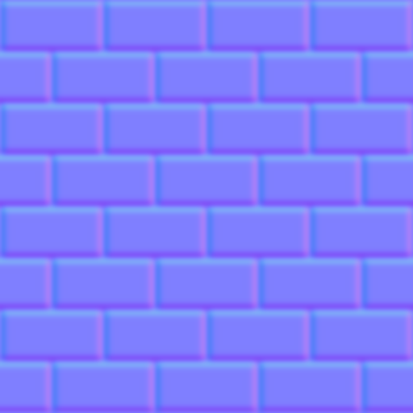

第 3 课讲了几何体（形状），第 4 课讲了材质（外观参数）。但你注意到没有——篝火 demo 里木头上的纹理是怎么来的？这节课讲清楚：图片是怎么"贴"到 3D 物体上的？
一张普通的 2D 图片（JPG/PNG），贴在 3D 物体表面。就像给礼物盒包包装纸——盒子是几何体，包装纸就是纹理。
把 3D 表面"展开"成 2D 平面的映射关系。每个顶点除了 (x, y, z) 位置，还有 (u, v) 坐标，告诉 GPU"这个点对应纹理图片上的哪个像素"。U 和 V 都是 0 到 1 的值。
材质上挂纹理的位置。一个 PBR 材质可以同时挂多张纹理——颜色贴图、法线贴图、粗糙度贴图等，各管各的。
想象把一个纸盒拆开摊平——这就是 UV 展开：
3D 立方体 UV 展开（2D）
┌─────┐ ┌──┬──┬──┬──┐
╱ ╱│ │后│左│前│右│
┌─────┐ │ ├──┴──┴──┴──┤
│ │ │ │ 底 │
│ │ ╱ ├───────────┤
└─────┘╱ │ 顶 │
└───────────┘
每个顶点记住自己在 2D 纹理上的位置 (u, v)。GPU 渲染时，根据三角形三个顶点的 UV 坐标，自动插值出每个像素应该取纹理上哪个颜色。
法线贴图是最"神奇"的贴图——它不改变几何体，但能让平面看起来像有凹凸：
原理： 法线贴图的 RGB 颜色 = 表面法线的 XYZ 方向 R (红) = X 方向（左右倾斜） G (绿) = Y 方向（上下倾斜） B (蓝) = Z 方向（朝向观察者） 大部分像素偏蓝紫色 (128, 128, 255) = 法线朝向 (0, 0, 1) = 正对观察者 = 平坦 偏离蓝紫的像素 = 法线偏斜 = 光照产生阴影 = 看起来像凹凸
看这三张图就明白了：
1. 完全平坦的表面 → 整块淡紫色（法线全是 (0,0,1)）

2. 半球凸起 → 彩虹渐变（边缘法线朝四周倾斜，颜色 = 方向）

3. 实战：砖墙 → 砖缝边缘有绿色/粉色条纹（高度突变处法线朝侧面偏斜）


左：颜色贴图（长什么样） | 右：法线贴图（哪凸哪凹）
法线贴图是性能优化的核心手段——用 2D 图片假装 3D 细节，不增加几何体：
| 场景 | 为什么用法线贴图 | 不用会怎样 |
|---|---|---|
| 砖墙/石板路 | 缝隙凹凸感 | 需要建几万边形才有同样效果 |
| 皮肤/皮革 | 毛孔、皱纹、纹理 | 模型面数爆炸，手机跑不动 |
| 金属划痕 | 细微划痕的反光变化 | 需要真的建模划痕，不现实 |
| 布料褶皱 | 衣服上的细小褶皱 | 需要极高面数才能表现 |
| 岩石/树皮 | 自然表面的粗糙感 | 程序化生成或雕刻成本极高 |
| 方法 | 工具 | 适用 |
|---|---|---|
| 从照片生成 | Photoshop (NVIDIA 插件)、GIMP、在线工具 | 快速原型、真实材质 |
| 从高度图转换 | Substance Designer、Materialize | 程序化纹理、游戏资产 |
| 3D 雕刻烘焙 | ZBrush、Blender | 高精度模型转低模 |
| 手绘 | Substance Painter | 风格化游戏（卡通渲染） |
normal_texture。这是标准 PBR 流程。
法线贴图有个致命弱点——灯光方向变了会穿帮：
场景：一面砖墙，贴了法线贴图 灯光从左边打来：砖缝左边亮、右边暗 ✅ 看起来合理 灯光从右边打来：砖缝还是左边亮、右边暗 ❌ 穿帮了！ 为什么？法线贴图存的是固定的法线方向，不随灯光变化。 它只是告诉 GPU "这个像素的表面朝这边"，然后 GPU 根据当前灯光方向计算明暗。 灯光变了，但法线没变，光照结果就不对——凹凸感不会跟着灯光"转"。
| 方案 | 原理 | 适用场景 | 性能开销 |
|---|---|---|---|
| 法线贴图 | 2D 图片存法线方向 | 灯光方向固定/变化小 | 最便宜 |
| 视差贴图 (Parallax) | 根据视角偏移 UV，模拟深度 | 轻微视角变化 | 便宜 |
| 位移贴图 (Displacement) | 真的移动顶点 | 需要真实凹凸 | 中等 |
| Tessellation | GPU 实时细分网格 | 近距离特写 | 贵 |
| 高模 | 直接建高面数模型 | 电影级渲染 | 最贵 |
| 平台 | 策略 |
|---|---|
| 手机游戏 | 法线贴图 + 限制灯光变化范围（或接受穿帮） |
| PC/主机游戏 | 法线贴图 + 视差贴图（远景）/ tessellation（近景） |
| 电影/CG | 高模 + 位移贴图（不在乎性能） |
| 选项 | 做法 | 效果 |
|---|---|---|
| 1. 限制灯光范围 | 灯光只在 ±45° 内变化 | 穿帮不明显，大多数游戏这么做 |
| 2. 视差贴图 | 法线贴图升级版，根据视角偏移 UV | 比纯法线贴图好，但灯光变化还是会穿帮 |
| 3. 真的建模 | 砖缝、划痕真的建出来 | 灯光怎么变都对，但面数爆炸 |
| 4. 混合方案（LOD） | 远景用法线贴图，近景换高模 | 性能和效果的平衡 |
法线贴图模拟微观凹凸，还有一种贴图模拟宏观光影——光照贴图（Lightmap）：
| 贴图类型 | 模拟什么 | 什么时候用 | 运行时还需要光照吗？ |
|---|---|---|---|
| 法线贴图 | 微观凹凸（砖缝、毛孔） | 任何需要表面细节的地方 | 需要（法线贴图依赖光照方向） |
| 光照贴图 | 宏观光影（阳光、阴影） | 静物、场景、建筑 | 不需要（光影已烘焙） |
1. 建模 + UV 展开（第二套 UV 专门给光照贴图） 2. 布置灯光（方向光、点光源） 3. 烘焙光照（Godot: BakedLightmap 节点） → 生成一张光照贴图（存明暗信息） 4. 运行时：材质挂光照贴图，灯光设为 "Baked Only" → 不再实时计算这个物体的光照
| 场景 | 适合烘焙吗？ | 原因 |
|---|---|---|
| 建筑内部/外部 | ✅ 非常适合 | 静物，光照方向固定 |
| 地形/地面 | ✅ 非常适合 | 大面积静物，实时光照太贵 |
| 静态道具（桌椅、箱子） | ✅ 适合 | 不动，光影不变 |
| 角色/载具 | ❌ 不适合 | 会动，光影要实时算 |
| 动态灯光（手电筒、爆炸） | ❌ 不能烘焙 | 灯光本身在变 |
BakedLightmap 节点标记烘焙范围，点击 "Bake" 生成光照贴图。角色和动态物体设为 Dynamic，静物设为 Baked。这是手游性能优化的标准做法。
法线贴图、AO 贴图、光照贴图经常一起出现，但它们骗的东西完全不同：
| 贴图 | 管什么 | 尺度 | 依赖光照方向？ | 动态光照下穿帮？ |
|---|---|---|---|---|
| 法线贴图 | 表面朝向（假凹凸） | 微观（毛孔、划痕） | ✅ 依赖 | ❌ 会穿帮 |
| AO 贴图 | 环境光被挡多少 | 中观（缝隙、角落） | ❌ 不依赖 | ✅ 不穿帮 |
| 光照贴图 | 直接光的明暗和阴影 | 宏观（房间、地形） | ❌ 已烘焙固定 | ❌ 灯光必须固定 |
AO = Ambient Occlusion（环境光遮蔽），模拟的是：缝隙、凹陷、角落处的环境光被"挡住"了，所以更暗。
现实世界的直觉： 墙角比墙面中间暗（两面墙互相挡光） 砖缝比砖面暗（缝隙深处光进不去） 物体接触地面的接缝处有一圈暗边 AO 贴图是灰度图： 白色 = 完全暴露，环境光照得足 黑色 = 完全遮蔽，环境光进不去 灰色 = 半遮蔽
因为 AO 假设环境光来自四面八方（天空光、反弹光），不来自特定方向。所以不管你的主光源怎么转，缝隙里该暗还是暗——这是物理上合理的。
砖墙场景： 法线贴图：砖缝在直射光下有明暗变化（阳光扫过会闪）→ 会穿帮 AO 贴图：砖缝深处永远比砖面暗一点（不管阳光从哪来）→ 不穿帮 两者叠加 = 真实的砖缝观感
| 层级 | 贴图 | 作用 | 例子 |
|---|---|---|---|
| 微观 | 法线贴图 | 直接光下的凹凸细节 | 砖缝在阳光下的明暗 |
| 中观 | AO 贴图 | 环境光的遮蔽 | 砖缝深处永远偏暗 |
| 宏观 | 光照贴图 | 整体光影和阴影 | 阳光照在墙面上的亮区、柱子投在地上的影子 |
// 地球 demo — 颜色贴图
const earthTex = await loadTexture('./textures/earth.b64.txt', 'image/jpeg');
const earth = new THREE.Mesh(geometry, new THREE.MeshPhongMaterial({
map: earthTex, // 颜色贴图通道
emissiveMap: earthTex, // 自发光贴图通道（iSH 兼容方案）
}));
// 篝火 demo — 程序生成纹理（CanvasTexture）
const woodTex = makeWoodTexture(); // Canvas 2D 画木纹
const logMat = new THREE.MeshStandardMaterial({
map: woodTex, // 颜色贴图
roughnessMap: makeWoodRoughness(), // 粗糙度贴图
});
当 UV 坐标超出 0~1 范围时，纹理怎么显示？
| 模式 | Three.js | 效果 |
|---|---|---|
| 重复 | RepeatWrapping | 平铺重复（铺地砖） |
| 镜像重复 | MirroredRepeatWrapping | 镜像平铺（无接缝） |
| 边缘拉伸 | ClampToEdgeWrapping | 边缘像素拉伸（地形图） |
// 地面铺砖 — 纹理重复 4x4 次
const tex = new THREE.TextureLoader().load('tiles.png');
tex.wrapS = tex.wrapT = THREE.RepeatWrapping;
tex.repeat.set(4, 4);
const floorMat = new THREE.MeshStandardMaterial({ map: tex });
| 尺寸 | 内存 | 适用 |
|---|---|---|
| 256×256 | 0.25 MB | 小物件、远景 |
| 512×512 | 1 MB | 一般场景 |
| 1024×1024 | 4 MB | 主角、近景 |
| 2048×2048 | 16 MB | 高清特写（地球贴图） |
| 4096×4096 | 64 MB | 电影级，手机上慎用 |
| Three.js | Godot | 说明 |
|---|---|---|
map | albedo_texture | 颜色贴图 |
normalMap | normal_texture | 法线贴图 |
roughnessMap | roughness_texture | 粗糙度贴图 |
metalnessMap | metallic_texture | 金属度贴图 |
aoMap | ao_texture | AO 贴图 |
emissiveMap | emission_texture | 自发光贴图 |
RepeatWrapping | 材质 → UV1 → 重复 | 纹理重复 |
"石柱用 StandardMaterial3D，albedo_texture 用灰色石材纹理（1024×1024），normal_texture 用石材表面的凹凸法线贴图——让柱面看起来有凿痕和风化痕迹。roughness_texture 控制粗糙度——底部被触摸多的地方 roughness 低（更光滑），高处 roughness 高（更粗糙）。地面石板 albedo_texture 设 RepeatWrapping 平铺 8×8 次，配 AO 贴图让石板缝隙处自然变暗。壁画墙面用 emissive 通道挂一张发光的符文贴图，让某些图案微微发光。"
→ 你用了 5 种贴图通道（albedo、normal、roughness、AO、emissive）描述完整材质方案。这就是专业级的纹理描述。